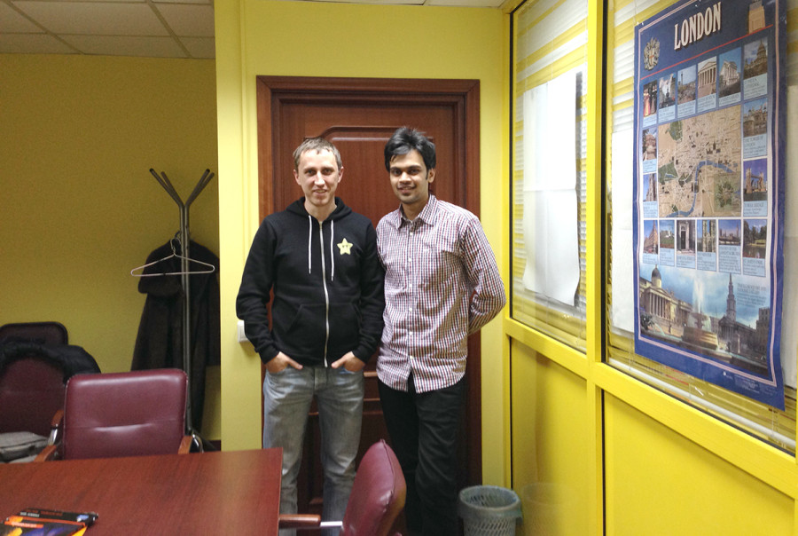

Ходил на английский язык полтора года, сначала в Хайлайт, а потом в Бенедикт. Но после Нового года, к сожалению, забросил. Времени не хватает, мотивации, в общем всё как у всех. Но на прошлой неделе позвонила из Бенедикта женщина, которая ходила вместе со мной, сказала, что пора находить всё-таки время, тем более на следующий урок придёт настоящий зарубежный гость.
У меня как раз образовалось немного свободного времени, и я решил, что пора вновь браться за ум. Сходил вчера на первый в этом году урок.
Зарубежным гостем оказался Arjun из Индии. Арджун по-русски не говорит никак, но тем не менее приехал в Кемерово. Пожалуй, поделюсь впечатлениями и знаниями, полученными в результате полуторачасового разговора с применением жестикуляции, скромного словарного запаса и зачатков грамматики.

Арджуну 22 года. Первое впечатление: его произношение вовсе не то, что я ждал. Я, к слову, думал, что они там в Индии изучают английский как мы. Оказывается английский язык — их официальный язык, наряду с хинди и есть семьи, где говорят именно на английском. Я-то знал, что Индия — бывшая английская колония, но параллель как-то не провёл до языка. Но произношение… Не то.
В России, как и вообще за границей, Арджун впервые. Хотел бы посетить ещё Великобританию, да и всю Европу. Сложности с визами примерно те же, что и у россиян.
Учится на специалиста в области маркетинга. Из Индии уезжать не планирует, сказал, что там вообще никто не хочет уезжать навсегда, думаю лукавит. Сюда приехал, впечатлившись рассказами посетившего Кемерово в прошлом году друга. После Кемерова планирует посетить Москву и Санкт-Петербург. Снега раньше не видел, но, в общем, холод его не шокировал, хотя эти дни погоды стоят те ещё.
Про Путина не слышал раньше ничего. А ты знаешь кто президент в Индии? За олимпиадой не следил.
Родители — бизнесмены. Уровень жизни схож с российским. Налоги меньше наших, тот кто работает на себя в пенсионный фонд не платит и пенсии в будущем не получает.
Индия — религиозная страна. Спросил про корову — да, священное животное. У них в семье их две. Держат для молока. Вся семья — вегетарианцы с рождения. Без алюминиевых шапочек, просто таков уклад. Алкоголь в Индии пьют. Мужской напиток в Индии — виски. Женский — водка.
Отношения мужчин и женщин отличаются от российских. В Индии весьма распространены браки по договорённости между родителями жениха и невесты. Браки «по любви», несмотря на тенденцию к увеличению их количества, всё ещё очень редки. Причём при выборе мужа или жены важную роль играет кастовость. Браки между членами разных кастами очень не приветствуются, и возможны только в случае той самой договорённости между родителями. Если же влюблённые нарушат этот принцип, им приходится покинуть семью.
Красная точка на лбу изначально означало, что женщина замужем. Сейчас это скорее декоративный элемент. Замужние женщины посыпают пробор на голове красной пудрой.
В Индии много операторов сотовой связи, но плохой интернет. Скорость 2 мегабита считается нормальной, у Арджуна дома целых шесть. Это очень хорошо. Арджун думал, что и в России не очень, пока я не сказал ему, что выбранный им оператор Теле2 не ориентирован на мобильный интернет.
Молодёжь как и в России сидит в социальных сетях. Распространены Facebook, Twitter и Instagram. Местные социальные сети выдавил Facebook. О российской ВиКей узнал только в России. Об «Одноклассниках» не знает до сих пор. Напомню, что в Турции «Одноклассники» весьма популярны.
У него есть машина, «Шкода», «такую модель в России не производят». Дорожное движение в Индии, как мы и думали, ужасное — «правила есть, но их никто не соблюдает».
Это было моё первое столь продолжительное общение с невладеющим русским языком иностранцем и в целом впечатление довольно интересное. Вроде и непонятно ничего, а всё понятно. Вроде и не знаешь как вопрос задать, а всё спрашиваешь. Давно были планы по изучению языка с преподавателем по скайпу, теперь буду планировать эти планы усердней.